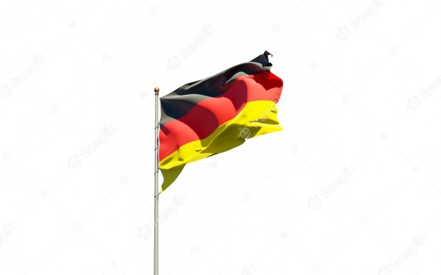
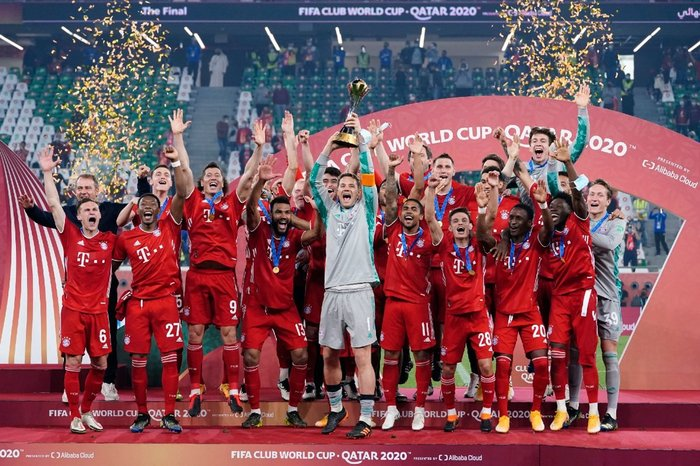

Germany (German: Deutschland, pronounced [ˈdɔʏtʃlant]), officially the Federal Republic of Germany,[e] is a country in Central Europe. It is the second-most populous country in Europe after Russia, and the most populous member state of the European Union. Germany is situated between the Baltic and North seas to the north, and the Alps to the south; covering an area of 357,022 square kilometres (137,847 sq mi), with a population of over 83 million within its 16 constituent states. It borders Denmark to the north, Poland and the Czechia to the east, Austria and Switzerland to the south, and France, Luxembourg, Belgium, and the Netherlands to the west. The nation's capital and largest city is Berlin, and its financial centre is Frankfurt; the largest urban area is the Ruhr.
Various Germanic tribes have inhabited the northern parts of modern Germany since classical antiquity. A region named Germania was documented before AD 100. In the 10th century, German territories formed a central part of the Holy Roman Empire. During the 16th century, northern German regions became the centre of the Protestant Reformation. Following the Napoleonic Wars and the dissolution of the Holy Roman Empire in 1806, the German Confederation was formed in 1815. In 1871, Germany became a nation-state when most of the German states unified into the Prussian-dominated German Empire. After World War I and the German Revolution of 1918–1919, the Empire was replaced by the semi-presidential Weimar Republic. The Nazi seizure of power in 1933 led to the establishment of a dictatorship, World War II, and the Holocaust. After the end of World War II in Europe and a period of Allied occupation, Germany was divided into the Federal Republic of Germany, generally known as West Germany, and the German Democratic Republic, East Germany. The Federal Republic of Germany was a founding member of the European Economic Community and the European Union, while the German Democratic Republic was a communist Eastern Bloc state and member of the Warsaw Pact. After the fall of communism, German reunification saw the former East German states join the Federal Republic of Germany on 3 October 1990—becoming a federal parliamentary republic.
Germany is a great power with a strong economy; it has the largest economy in Europe, the world's fourth-largest economy by nominal GDP, and the fifth-largest by PPP. As a global leader in several industrial, scientific and technological sectors, it is both the world's third-largest exporter and importer of goods. As a developed country, which ranks very high on the Human Development Index, it offers social security and a universal health care system, environmental protections, and a tuition-free university education. Germany is a member of the United Nations, NATO, the G7, the G20, and the OECD. It has the third-greatest number of UNESCO World Heritage Sites. Read wiki for more info
| Rank | Name | State |
|---|---|---|
| 1 | Berlin | Berlin |
| 2 | Hamburg | Hamburg |
| 3 | Munich | Bavaria |
| 4 | Cologne | North Rhine-Westphalia |
| 5 | Frankfurt | Hesse |
| 6 | Stuttgart | Baden-Württemberg |
| 7 | Düsseldorf | North Rhine-Westphalia |
| 8 | Leipzig | Saxony |
| 9 | Dortmund | North Rhine-Westphalia |
| 10 | Essen | North Rhine-Westphalia |
The English word Germany derives from the Latin Germania, which came into use after Julius Caesar adopted it for the peoples east of the Rhine.[11] The German term Deutschland, originally diutisciu land ('the German lands') is derived from deutsch (cf. Dutch), descended from Old High German diutisc 'of the people' (from diot or diota 'people'), originally used to distinguish the language of the common people from Latin and its Romance descendants. This in turn descends from Proto-Germanic *þiudiskaz 'of the people' (see also the Latinised form Theodiscus), derived from *þeudō, descended from Proto-Indo-European *tewtéh₂- 'people', from which the word Teutons also originates.[12]
Ancient humans were present in Germany at least 600,000 years ago. [13] The first non-modern human fossil (the Neanderthal) was discovered in the Neander Valley. [14] Similarly dated evidence of modern humans has been found in the Swabian Jura, including 42,000-year-old flutes which are the oldest musical instruments ever found,[15] the 40,000-year-old Lion Man, [16] and the 35,000-year-old Venus of Hohle Fels.[17] The Nebra sky disk, created during the European Bronze Age, is attributed to a German site.[18]
The Germanic tribes are thought to date from the Nordic Bronze Age or the Pre-Roman Iron Age. [19] From southern Scandinavia and north Germany, they expanded south, east, and west, coming into contact with the Celtic, Iranian, Baltic, and Slavic tribes.[20]
Under Augustus, the Roman Empire began to invade lands inhabited by the Germanic tribes, creating a short-lived Roman province of Germania between the Rhine and Elbe rivers. In 9 AD, three Roman legions were defeated by Arminius.[21] By 100 AD, when Tacitus wrote Germania, Germanic tribes had settled along the Rhine and the Danube (the Limes Germanicus), occupying most of modern Germany. However, Baden Württemberg, southern Bavaria, southern Hesse and the western Rhineland had been incorporated into Roman provinces. [22][23][24] Around 260, Germanic peoples broke into Roman-controlled lands. [25] After the invasion of the Huns in 375, and with the decline of Rome from 395, Germanic tribes moved farther southwest: the Franks established the Frankish Kingdom and pushed east to subjugate Saxony and Bavaria, and areas of what is today eastern Germany were inhabited by Western Slavic tribes.[22]
Charlemagne founded the Carolingian Empire in 800; it was divided in 843[26] and the Holy Roman Empire emerged from the eastern portion. The territory initially known as East Francia stretched from the Rhine in the west to the Elbe River in the east and from the North Sea to the Alps.[26] The Ottonian rulers (919–1024) consolidated several major duchies.[27] In 996 Gregory V became the first German Pope, appointed by his cousin Otto III, whom he shortly after crowned Holy Roman Emperor. The Holy Roman Empire absorbed northern Italy and Burgundy under the Salian emperors (1024–1125), although the emperors lost power through the Investiture controversy.[28]
Under the Hohenstaufen emperors (1138–1254), German princes encouraged German settlement to the south and east (Ostsiedlung). Members of the Hanseatic League, mostly north German towns, prospered in the expansion of trade.[29] Population declined starting with the Great Famine in 1315, followed by the Black Death of 1348–50.[30] The Golden Bull issued in 1356 provided the constitutional structure of the Empire and codified the election of the emperor by seven prince-electors.[31] Johannes Gutenberg introduced moveable-type printing to Europe, laying the basis for the democratization of knowledge.[32] In 1517, Martin Luther incited the Protestant Reformation and his translation of the Bible began the standardization of the language; the 1555 Peace of Augsburg tolerated the "Evangelical" faith (Lutheranism), but also decreed that the faith of the prince was to be the faith of his subjects (cuius regio, eius religio).[33] From the Cologne War through the Thirty Years' Wars (1618–1648), religious conflict devastated German lands and significantly reduced the population.[34][35]
The Peace of Westphalia ended religious warfare among the Imperial Estates;[34] their mostly German-speaking rulers were able to choose Roman Catholicism, Lutheranism, or the Reformed faith as their official religion.[36] The legal system initiated by a series of Imperial Reforms (approximately 1495–1555) provided for considerable local autonomy and a stronger Imperial Diet.[37] The House of Habsburg held the imperial crown from 1438 until the death of Charles VI in 1740. Following the War of Austrian Succession and the Treaty of Aix-la-Chapelle, Charles VI's daughter Maria Theresa ruled as Empress Consort when her husband, Francis I, became Emperor.[38][39]
From 1740, dualism between the Austrian Habsburg Monarchy and the Kingdom of Prussia dominated German history. In 1772, 1793, and 1795, Prussia and Austria, along with the Russian Empire, agreed to the Partitions of Poland.[40][41] During the period of the French Revolutionary Wars, the Napoleonic era and the subsequent final meeting of the Imperial Diet, most of the Free Imperial Cities were annexed by dynastic territories; the ecclesiastical territories were secularised and annexed. In 1806 the Imperium was dissolved; France, Russia, Prussia and the Habsburgs (Austria) competed for hegemony in the German states during the Napoleonic Wars.[42]
Germany is the seventh-largest country in Europe; [4] bordering Denmark to the north, Poland and the Czech Republic to the east, Austria to the southeast, and Switzerland to the south-southwest. France, Luxembourg and Belgium are situated to the west, with the Netherlands to the northwest. Germany is also bordered by the North Sea and, at the north-northeast, by the Baltic Sea. German territory covers 357,022 km2 (137,847 sq mi), consisting of 348,672 km2 (134,623 sq mi) of land and 8,350 km2 (3,224 sq mi) of water.
Most of Germany has a temperate climate, ranging from oceanic in the north to continental in the east and southeast. Winters range from the cold in the Southern Alps to mild and are generally overcast with limited precipitation, while summers can vary from hot and dry to cool and rainy. The northern regions have prevailing westerly winds that bring in moist air from the North Sea, moderating the temperature and increasing precipitation. Conversely, the southeast regions have more extreme temperatures.[109]
From February 2019 – 2020, average monthly temperatures in Germany ranged from a low of 3.3 °C (37.9 °F) in January 2020 to a high of 19.8 °C (67.6 °F) in June 2019.[110] Average monthly precipitation ranged from 30 litres per square metre in February and April 2019 to 125 litres per square metre in February 2020.[111] Average monthly hours of sunshine ranged from 45 in November 2019 to 300 in June 2019.[112] The highest temperature ever recorded in Germany was 42.6 °C on 25 July 2019 in Lingen and the lowest was −37.8 °C on 12 February 1929 in Wolnzach.[113][114]
Elevation ranges from the mountains of the Alps (highest point: the Zugspitze at 2,963 metres or 9,721 feet) in the south to the shores of the North Sea (Nordsee) in the northwest and the Baltic Sea (Ostsee) in the northeast. The forested uplands of central Germany and the lowlands of northern Germany (lowest point: in the municipality Neuendorf-Sachsenbande, Wilstermarsch at 3.54 metres or 11.6 feet below sea level[108]) are traversed by such major rivers as the Rhine, Danube and Elbe. Significant natural resources include iron ore, coal, potash, timber, lignite, uranium, copper, natural gas, salt, and nickel.[4]
The territory of Germany can be divided into five terrestrial ecoregions: Atlantic mixed forests, Baltic mixed forests, Central European mixed forests, Western European broadleaf forests, and Alps conifer and mixed forests.[115] As of 2016 51% of Germany's land area is devoted to agriculture, while 30% is forested and 14% is covered by settlements or infrastructure.[116]
Plants and animals include those generally common to Central Europe. According to the National Forest Inventory, beeches, oaks, and other deciduous trees constitute just over 40% of the forests; roughly 60% are conifers, particularly spruce and pine.[117] There are many species of ferns, flowers, fungi, and mosses. Wild animals include roe deer, wild boar, mouflon (a subspecies of wild sheep), fox, badger, hare, and small numbers of the Eurasian beaver.[118] The blue cornflower was once a German national symbol.[119]
The 16 national parks in Germany include the Jasmund National Park, the Vorpommern Lagoon Area National Park, the Müritz National Park, the Wadden Sea National Parks, the Harz National Park, the Hainich National Park, the Black Forest National Park, the Saxon Switzerland National Park, the Bavarian Forest National Park and the Berchtesgaden National Park.[120] In addition, there are 17 Biosphere Reserves,[121] and 105 nature parks.[122] More than 400 zoos and animal parks operate in Germany.[123] The Berlin Zoo, which opened in 1844, is the oldest in Germany, and claims the most comprehensive collection of species in the world.[124]
Germany is a federal, parliamentary, representative democratic republic. Federal legislative power is vested in the parliament consisting of the Bundestag (Federal Diet) and Bundesrat (Federal Council), which together form the legislative body. The Bundestag is elected through direct elections using the mixed-member proportional representation system. The members of the Bundesrat represent and are appointed by the governments of the sixteen federated states.[4] The German political system operates under a framework laid out in the 1949 constitution known as the Grundgesetz (Basic Law). Amendments generally require a two-thirds majority of both the Bundestag and the Bundesrat; the fundamental principles of the constitution, as expressed in the articles guaranteeing human dignity, the separation of powers, the federal structure, and the rule of law, are valid in perpetuity.[125]
The president, currently Frank-Walter Steinmeier, is the head of state and invested primarily with representative responsibilities and powers. He is elected by the Bundesversammlung (federal convention), an institution consisting of the members of the Bundestag and an equal number of state delegates.[4] The second-highest official in the German order of precedence is the Bundestagspräsident (President of the Bundestag), who is elected by the Bundestag and responsible for overseeing the daily sessions of the body.[126] The third-highest official and the head of government is the chancellor, who is appointed by the Bundespräsident after being elected by the party or coalition with the most seats in the Bundestag.[4] The chancellor, currently Angela Merkel, is the head of government and exercises executive power through her Cabinet.[4]
Since 1949, the party system has been dominated by the Christian Democratic Union and the Social Democratic Party of Germany. So far every chancellor has been a member of one of these parties. However, the smaller liberal Free Democratic Party and the Alliance '90/The Greens have also been junior partners in coalition governments. Since 2007, the left-wing populist party The Left has been a staple in the German Bundestag, though they have never been part of the federal government. In the 2017 German federal election, the right-wing populist Alternative for Germany gained enough votes to attain representation in the parliament for the first time.[127][128]
Germany is a federal state and comprises sixteen constituent states which are collectively referred to as Länder.[129] Each state (Land) has its own constitution,[130] and is largely autonomous in regard to its internal organisation.[129] As of 2017 Germany is divided into 401 districts (Kreise) at a municipal level; these consist of 294 rural districts and 107 urban districts.[131]
Germany has a social market economy with a highly skilled labour force, a low level of corruption, and a high level of innovation.[4][166][167] It is the world's third largest exporter and third largest importer of goods,[4] and has the largest economy in Europe, which is also the world's fourth-largest economy by nominal GDP,[168] and the fifth-largest by PPP.[169] Its GDP per capita measured in purchasing power standards amounts to 121% of the EU27 average (100%).[170] The service sector contributes approximately 69% of the total GDP, industry 31%, and agriculture 1% as of 2017.[4] The unemployment rate published by Eurostat amounts to 3.2% as of January 2020, which is the fourth-lowest in the EU.[171]
Germany is part of the European single market which represents more than 450 million consumers.[172] In 2017, the country accounted for 28% of the Eurozone economy according to the International Monetary Fund.[173] Germany introduced the common European currency, the Euro, in 2002.[174] Its monetary policy is set by the European Central Bank, which is headquartered in Frankfurt.[175][165]
Being home to the modern car, the automotive industry in Germany is regarded as one of the most competitive and innovative in the world,[176] and is the fourth largest by production.[177] The top 10 exports of Germany are vehicles, machinery, chemical goods, electronic products, electrical equipments, pharmaceuticals, transport equipments, basic metals, food products, and rubber and plastics.[178]
Of the world's 500 largest stock-market-listed companies measured by revenue in 2019, the Fortune Global 500, 29 are headquartered in Germany.[179] 30 major Germany-based companies are included in the DAX, the German stock market index which is operated by Frankfurt Stock Exchange.[180] Well-known international brands include Mercedes-Benz, BMW, Volkswagen, Audi, Siemens, Allianz, Adidas, Porsche, Bosch and Deutsche Telekom.[181] Berlin is a hub for startup companies and has become the leading location for venture capital funded firms in the European Union.[182] Germany is recognised for its large portion of specialised small and medium enterprises, known as the Mittelstand model.[183] These companies represent 48% global market leaders in their segments, labelled Hidden Champions.[184]
Research and development efforts form an integral part of the German economy.[185] In 2018 Germany ranked fourth globally in terms of number of science and engineering research papers published.[186] Germany was ranked 9th in the Global Innovation Index in 2019 and 2020.[187][188] Research institutions in Germany include the Max Planck Society, the Helmholtz Association, and the Fraunhofer Society and the Leibniz Association.[189] Germany is the largest contributor to the European Space Agency.[190]
With its central position in Europe, Germany is a transport hub for the continent.[191] Its road network is among the densest in Europe.[192] The motorway (Autobahn) is widely known for having no federally mandated speed limit for some classes of vehicles.[193] The InterCityExpress or ICE train network serves major German cities as well as destinations in neighbouring countries with speeds up to 300 km/h (190 mph).[194] The largest German airports are Frankfurt Airport and Munich Airport.[195] The Port of Hamburg is one of the top twenty largest container ports in the world.[196]
In 2015, Germany was the world's seventh-largest consumer of energy.[197] The government and the nuclear power industry agreed to phase out all nuclear power plants by 2021.[198] It meets the country's power demands using 40% renewable sources.[199] Germany is committed to the Paris Agreement and several other treaties promoting biodiversity, low emission standards, and water management.[200][201][202] The country's household recycling rate is among the highest in the world—at around 65%.[203] The country's greenhouse gas emissions per capita were the ninth highest in the EU in 2018.[204] The German energy transition (Energiewende) is the recognised move to a sustainable economy by means of energy efficiency and renewable energy.[205]
With a population of 80.2 million according to the 2011 census,[211] rising to 83.1 million as of 2019,[6] Germany is the most populous country in the European Union, the second-most populous country in Europe after Russia, and the nineteenth-most populous country in the world. Its population density stands at 227 inhabitants per square kilometre (588 per square mile). The overall life expectancy in Germany at birth is 80.19 years (77.93 years for males and 82.58 years for females).[4] The fertility rate of 1.41 children born per woman (2011 estimates) is below the replacement rate of 2.1 and is one of the lowest fertility rates in the world.[4] Since the 1970s, Germany's death rate has exceeded its birth rate. However, Germany is witnessing increased birth rates and migration rates since the beginning of the 2010s, particularly a rise in the number of well-educated migrants. Germany has the third oldest population in the world, with an average age of 47.4 years.[4]
Four sizeable groups of people are referred to as "national minorities" because their ancestors have lived in their respective regions for centuries:[212] There is a Danish minority in the northernmost state of Schleswig-Holstein;[212] the Sorbs, a Slavic population, are in the Lusatia region of Saxony and Brandenburg; the Roma and Sinti live throughout the country; and the Frisians are concentrated in Schleswig-Holstein's western coast and in the north-western part of Lower Saxony.[212]
After the United States, Germany is the second most popular immigration destination in the world. The majority of migrants live in western Germany, in particular in urban areas. Of the country's residents, 18.6 million people (22.5%) were of immigrant or partially immigrant descent in 2016 (including persons descending or partially descending from ethnic German repatriates).[213] In 2015, the Population Division of the United Nations Department of Economic and Social Affairs listed Germany as host to the second-highest number of international migrants worldwide, about 5% or 12 million of all 244 million migrants.[214] As of 2018, Germany ranks fifth amongst EU countries in terms of the percentage of migrants in the country's population, at 12.9%.[215]
Germany has a number of large cities. There are 11 officially recognised metropolitan regions. The country's largest city is Berlin, while its largest urban area is the Ruhr.[216]
The 2011 German Census showed Christianity as the largest religion in Germany, with 66.8% identified themselves as Christian, with 3.8% of those not being church members.[217] 31.7% declared themselves as Protestants, including members of the Evangelical Church in Germany (which encompasses Lutheran, Reformed and administrative or confessional unions of both traditions) and the free churches (German: Evangelische Freikirchen); 31.2% declared themselves as Roman Catholics, and Orthodox believers constituted 1.3%. According to data from 2016, the Catholic Church and the Evangelical Church claimed 28.5% and 27.5%, respectively, of the population.[218][219] Islam is the second largest religion in the country.[220] In the 2011 census, 1.9% of the census population (1.52 million people) gave their religion as Islam, but this figure is deemed unreliable because a disproportionate number of adherents of this religion (and other religions, such as Judaism) are likely to have made use of their right not to answer the question.[221] Most of the Muslims are Sunnis and Alevites from Turkey, but there are a small number of Shi'ites, Ahmadiyyas and other denominations. Other religions comprise less than one percent of Germany's population.[220]
A study in 2018 estimated that 38% of the population are not members of any religious organization or denomination,[222] though up to a third may still consider themselves religious. Irreligion in Germany is strongest in the former East Germany, which used to be predominantly Protestant before the enforcement of state atheism, and in major metropolitan areas.[223][224]
German is the official and predominant spoken language in Germany.[225] It is one of 24 official and working languages of the European Union, and one of the three procedural languages of the European Commission.[226] German is the most widely spoken first language in the European Union, with around 100 million native speakers.[227]
Recognised native minority languages in Germany are Danish, Low German, Low Rhenish, Sorbian, Romany, North Frisian and Saterland Frisian; they are officially protected by the European Charter for Regional or Minority Languages. The most used immigrant languages are Turkish, Arabic, Kurdish, Polish, the Balkan languages and Russian. Germans are typically multilingual: 67% of German citizens claim to be able to communicate in at least one foreign language and 27% in at least two.[225]
Culture in German states has been shaped by major intellectual and popular currents in Europe, both religious and secular. Historically, Germany has been called Das Land der Dichter und Denker ('the land of poets and thinkers'),[242] because of the major role its scientists, writers and philosophers have played in the development of Western thought.[243] A global opinion poll for the BBC revealed that Germany is recognised for having the most positive influence in the world in 2013 and 2014.[244][245]
Germany is well known for such folk festival traditions as Oktoberfest and Christmas customs, which include Advent wreaths, Christmas pageants, Christmas trees, Stollen cakes, and other practices.[246][247] As of 2016 UNESCO inscribed 41 properties in Germany on the World Heritage List.[248] There are a number of public holidays in Germany determined by each state; 3 October has been a national day of Germany since 1990, celebrated as the Tag der Deutschen Einheit (German Unity Day).[249]
German classical music includes works by some of the world's most well-known composers. Dieterich Buxtehude, Johann Sebastian Bach and Georg Friedrich Händel were influential composers of the Baroque period. Ludwig van Beethoven was a crucial figure in the transition between the Classical and Romantic eras. Carl Maria von Weber, Felix Mendelssohn, Robert Schumann and Johannes Brahms were significant Romantic composers. Richard Wagner was known for his operas. Richard Strauss was a leading composer of the late Romantic and early modern eras. Karlheinz Stockhausen and Wolfgang Rihm are important composers of the 20th and early 21st centuries.[250]
As of 2013, Germany was the second largest music market in Europe, and fourth largest in the world.[251] German popular music of the 20th and 21st centuries includes the movements of Neue Deutsche Welle, pop, Ostrock, heavy metal/rock, punk, pop rock, indie, Volksmusik (folk music), schlager pop and German hip hop. German electronic music gained global influence, with Kraftwerk and Tangerine Dream pioneering in this genre.[252] DJs and artists of the techno and house music scenes of Germany have become well known (e.g. Paul van Dyk, Felix Jaehn, Paul Kalkbrenner, Robin Schulz and Scooter).[253]
German painters have influenced western art. Albrecht Dürer, Hans Holbein the Younger, Matthias Grünewald and Lucas Cranach the Elder were important German artists of the Renaissance, Johann Baptist Zimmermann of the Baroque, Caspar David Friedrich and Carl Spitzweg of Romanticism, Max Liebermann of Impressionism and Max Ernst of Surrealism. Several German art groups formed in the 20th century; Die Brücke (The Bridge) and Der Blaue Reiter (The Blue Rider) influenced the development of expressionism in Munich and Berlin. The New Objectivity arose in response to expressionism during the Weimar Republic. After World War II, broad trends in German art include neo-expressionism and the New Leipzig School.[254]
Architectural contributions from Germany include the Carolingian and Ottonian styles, which were precursors of Romanesque. Brick Gothic is a distinctive medieval style that evolved in Germany. Also in Renaissance and Baroque art, regional and typically German elements evolved (e.g. Weser Renaissance).[254] Vernacular architecture in Germany is often identified by its timber framing (Fachwerk) traditions and varies across regions, and among carpentry styles.[255] When industrialisation spread across Europe, Classicism and a distinctive style of historicism developed in Germany, sometimes referred to as Gründerzeit style. Expressionist architecture developed in the 1910s in Germany and influenced Art Deco and other modern styles. Germany was particularly important in the early modernist movement: it is the home of Werkbund initiated by Hermann Muthesius (New Objectivity), and of the Bauhaus movement founded by Walter Gropius.[254] Ludwig Mies van der Rohe became one of the world's most renowned architects in the second half of the 20th century; he conceived of the glass façade skyscraper.[256] Renowned contemporary architects and offices include Pritzker Prize winners Gottfried Böhm and Frei Otto.[257]
German designers became early leaders of modern product design.[258] The Berlin Fashion Week and the fashion trade fair Bread & Butter are held twice a year.[259]
Football is the most popular sport in Germany. With more than 7 million official members, the German Football Association (Deutscher Fußball-Bund) is the largest single-sport organisation worldwide,[281] and the German top league, the Bundesliga, attracts the second highest average attendance of all professional sports leagues in the world.[282] The German men's national football team won the FIFA World Cup in 1954, 1974, 1990, and 2014,[283] the UEFA European Championship in 1972, 1980 and 1996,[284] and the FIFA Confederations Cup in 2017.[285]
Germany is one of the leading motor sports countries in the world. Constructors like BMW and Mercedes are prominent manufacturers in motor sport. Porsche has won the 24 Hours of Le Mans race 19 times, and Audi 13 times (as of 2017).[286] The driver Michael Schumacher has set many motor sport records during his career, having won seven Formula One World Drivers' Championships.[287] Sebastian Vettel is also among the top five most successful Formula One drivers of all time.[288]
Historically, German athletes have been successful contenders in the Olympic Games, ranking third in an all-time Olympic Games medal count (when combining East and West German medals). Germany was the last country to host both the summer and winter games in the same year, in 1936: the Berlin Summer Games and the Winter Games in Garmisch-Partenkirchen.[289] Munich hosted the Summer Games of 1972.[290]